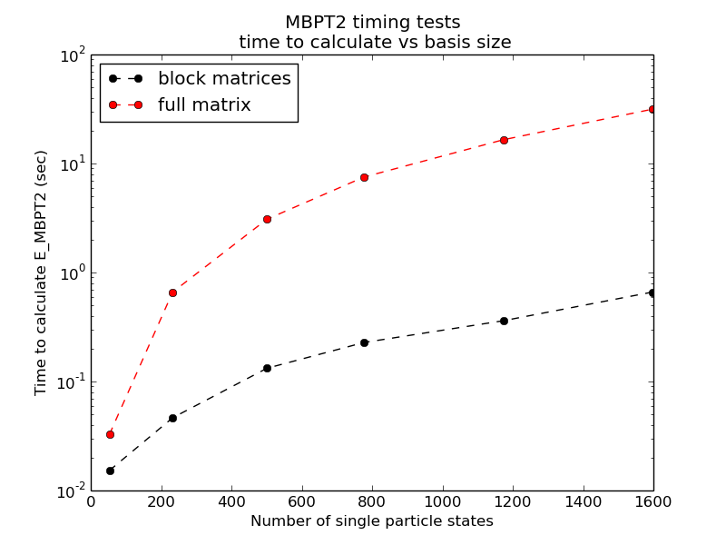
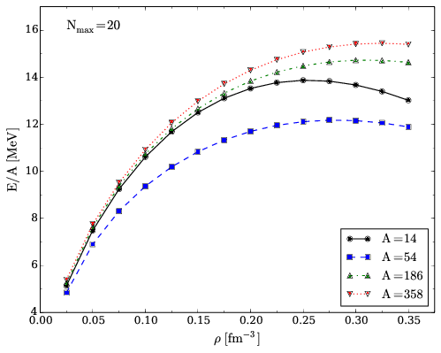
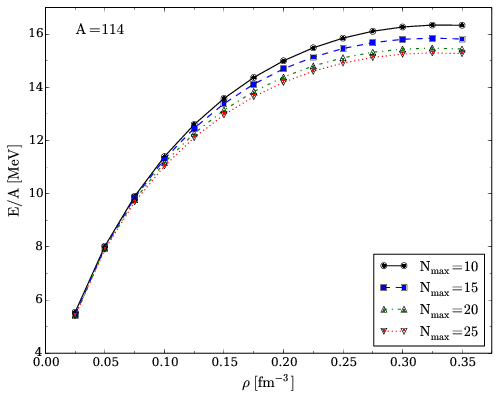
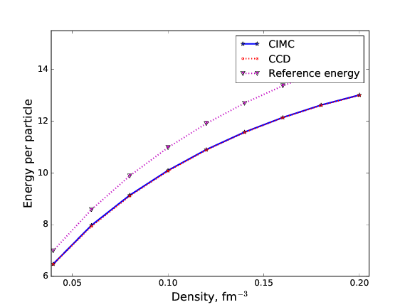

Coupled Cluster theory and infinite nuclear matter
Morten Hjorth-Jensen [1, 2]
[1] National Superconducting Cyclotron Laboratory and Department of Physics and Astronomy, Michigan State University, East Lansing, MI 48824, USA
[2] Department of Physics, University of Oslo, N-0316 Oslo, Norway
28th Indian-Summer School on Ab Initio Methods in Nuclear Physics
Introduction
Coester and Kummel first developed the ideas that led to coupled-cluster
theory in the late 1950s. The basic idea is that the correlated wave function
of a many-body system \( \mid\Psi\rangle \)
can be formulated as an exponential of correlation
operators \( T \) acting on a reference state \( \mid\Phi\rangle \)
$$
\mid\Psi\rangle = \exp\left(-\hat{T}\right)\mid\Phi\rangle\ .
$$
We will discuss how to define the operators later in this work. This simple
ansatz carries enormous power. It leads to a non-perturbative many-body
theory that includes summation of ladder diagrams , ring
diagrams, and an infinite-order
generalization of many-body perturbation theory.
Introduction
Developments and applications
of coupled-cluster theory took different routes in chemistry
and nuclear physics. In quantum chemistry,
coupled-cluster developments
and applications have proven to be extremely useful, see for example the review by Barrett and Musial as well as the recent
textbook by Shavitt and Barrett. Many previous applications to nuclear physics struggled with the repulsive character of the nuclear forces and limited basis sets used in the computations. Most of these problems have been overcome during the last decade and coupled-cluster
theory is one of the computational methods of preference for doing nuclear physics, with applications ranging from light nuclei to medium-heavy nuclei,
see for example the recent review by Hagen, Papenbrock, Hjorth-Jensen and Dean.
A non-practical way of solving the eigenvalue problem
Before we proceed with the derivation of the Coupled cluster equations, let us repeat some of the arguments we presented during our FCI lectures.
In our FCI discussions, we rewrote the solution of the Schroedinger equation as a set of coupled equationsin the unknown coefficients \( C \). Let us repeat some of these arguments.
To obtain the eigenstates and eigenvalues in terms of non-linear equations is not a very practical approach. However, it serves the scope of linking FCI theory with approximative solutions to the many-body problem
like Coupled cluster (CC) theory
A non-practical way of solving the eigenvalue problem
If we assume that we have a two-body operator at most, the Slater-Condon rule
gives then an equation for the
correlation energy in terms of \( C_i^a \) and \( C_{ij}^{ab} \) only. We get then
$$
\langle \Phi_0 | \hat{H} -E| \Phi_0\rangle + \sum_{ai}\langle \Phi_0 | \hat{H} -E|\Phi_{i}^{a} \rangle C_{i}^{a}+
\sum_{abij}\langle \Phi_0 | \hat{H} -E|\Phi_{ij}^{ab} \rangle C_{ij}^{ab}=0,
$$
or
$$
E-E_0 =\Delta E=\sum_{ai}\langle \Phi_0 | \hat{H}|\Phi_{i}^{a} \rangle C_{i}^{a}+
\sum_{abij}\langle \Phi_0 | \hat{H}|\Phi_{ij}^{ab} \rangle C_{ij}^{ab},
$$
where the energy \( E_0 \) is the reference energy and \( \Delta E \) defines the so-called correlation energy.
The single-particle basis functions could be the results of a Hartree-Fock calculation or just the eigenstates of the non-interacting part of the Hamiltonian.
A non-practical way of solving the eigenvalue problem
In our notes on Hartree-Fock calculations,
we have already computed the matrix \( \langle \Phi_0 | \hat{H}|\Phi_{i}^{a}\rangle \) and \( \langle \Phi_0 | \hat{H}|\Phi_{ij}^{ab}\rangle \). If we are using a Hartree-Fock basis, then the matrix elements
\( \langle \Phi_0 | \hat{H}|\Phi_{i}^{a}\rangle=0 \) and we are left with a correlation energy given by
$$
E-E_0 =\Delta E^{HF}=\sum_{abij}\langle \Phi_0 | \hat{H}|\Phi_{ij}^{ab} \rangle C_{ij}^{ab}.
$$
A non-practical way of solving the eigenvalue problem
Inserting the various matrix elements we can rewrite the previous equation as
$$
\Delta E=\sum_{ai}\langle i| \hat{f}|a \rangle C_{i}^{a}+
\sum_{abij}\langle ij | \hat{v}| ab \rangle C_{ij}^{ab}.
$$
This equation determines the correlation energy but not the coefficients \( C \).
We need more equations. Our next step is to set up
$$
\langle \Phi_i^a | \hat{H} -E| \Phi_0\rangle + \sum_{bj}\langle \Phi_i^a | \hat{H} -E|\Phi_{j}^{b} \rangle C_{j}^{b}+
\sum_{bcjk}\langle \Phi_i^a | \hat{H} -E|\Phi_{jk}^{bc} \rangle C_{jk}^{bc}+
\sum_{bcdjkl}\langle \Phi_i^a | \hat{H} -E|\Phi_{jkl}^{bcd} \rangle C_{jkl}^{bcd}=0,
$$
as this equation will allow us to find an expression for the coefficents \( C_i^a \) since we can rewrite this equation as
$$
\langle i | \hat{f}| a\rangle +\langle \Phi_i^a | \hat{H}|\Phi_{i}^{a} \rangle C_{i}^{a}+ \sum_{bj\ne ai}\langle \Phi_i^a | \hat{H}|\Phi_{j}^{b} \rangle C_{j}^{b}+
\sum_{bcjk}\langle \Phi_i^a | \hat{H}|\Phi_{jk}^{bc} \rangle C_{jk}^{bc}+
\sum_{bcdjkl}\langle \Phi_i^a | \hat{H}|\Phi_{jkl}^{bcd} \rangle C_{jkl}^{bcd}=EC_i^a.
$$
A non-practical way of solving the eigenvalue problem
We see that on the right-hand side we have the energy \( E \). This leads to a non-linear equation in the unknown coefficients.
These equations are normally solved iteratively ( that is we can start with a guess for the coefficients \( C_i^a \)). A common choice is to use perturbation theory for the first guess, setting thereby
$$
C_{i}^{a}=\frac{\langle i | \hat{f}| a\rangle}{\epsilon_i-\epsilon_a}.
$$
The observant reader will however see that we need an equation for \( C_{jk}^{bc} \) and \( C_{jkl}^{bcd} \) as well.
To find equations for these coefficients we need then to continue our multiplications from the left with the various
\( \Phi_{H}^P \) terms.
A non-practical way of solving the eigenvalue problem
For \( C_{jk}^{bc} \) we need then
$$
\langle \Phi_{ij}^{ab} | \hat{H} -E| \Phi_0\rangle + \sum_{kc}\langle \Phi_{ij}^{ab} | \hat{H} -E|\Phi_{k}^{c} \rangle C_{k}^{c}+
$$
$$
\sum_{cdkl}\langle \Phi_{ij}^{ab} | \hat{H} -E|\Phi_{kl}^{cd} \rangle C_{kl}^{cd}+\sum_{cdeklm}\langle \Phi_{ij}^{ab} | \hat{H} -E|\Phi_{klm}^{cde} \rangle C_{klm}^{cde}+\sum_{cdefklmn}\langle \Phi_{ij}^{ab} | \hat{H} -E|\Phi_{klmn}^{cdef} \rangle C_{klmn}^{cdef}=0,
$$
and we can isolate the coefficients \( C_{kl}^{cd} \) in a similar way as we did for the coefficients \( C_{i}^{a} \).
A standard choice for the first iteration is to set
$$
C_{ij}^{ab} =\frac{\langle ij \vert \hat{v} \vert ab \rangle}{\epsilon_i+\epsilon_j-\epsilon_a-\epsilon_b}.
$$
A non-practical way of solving the eigenvalue problem
At the end we can rewrite our solution of the Schroedinger equation in terms of \( n \) coupled equations for the coefficients \( C_H^P \).
This is a very cumbersome way of solving the equation. However, by using this iterative scheme we can illustrate how we can compute the
various terms in the wave operator or correlation operator \( \hat{C} \). We will later identify the calculation of the various terms \( C_H^P \)
as parts of different many-body approximations to full CI. In particular, we can relate this non-linear scheme with Coupled Cluster theory and
many-body perturbation theory.
Summarizing FCI and bringing in approximative methods
If we can diagonalize large matrices, FCI is the method of choice since:
- It gives all eigenvalues, ground state and excited states
- The eigenvectors are obtained directly from the coefficients \( C_H^P \) which result from the diagonalization
- We can compute easily expectation values of other operators, as well as transition probabilities
- Correlations are easy to understand in terms of contributions to a given operator beyond the Hartree-Fock contribution. This is the standard approach in many-body theory.
Summarizing FCI and bringing in approximative methods
The correlation energy is defined as, with a two-body Hamiltonian,
$$
\Delta E=\sum_{ai}\langle i| \hat{f}|a \rangle C_{i}^{a}+
\sum_{abij}\langle ij | \hat{v}| ab \rangle C_{ij}^{ab}.
$$
The coefficients \( C \) result from the solution of the eigenvalue problem.
The energy of say the ground state is then
$$
E=E_{ref}+\Delta E,
$$
where the so-called reference energy is the energy we obtain from a Hartree-Fock calculation, that is
$$
E_{ref}=\langle \Phi_0 \vert \hat{H} \vert \Phi_0 \rangle.
$$
Summarizing FCI and bringing in approximative methods
However, as we have seen, even for a small case like the four first major shells and a nucleus like oxygen-16, the dimensionality becomes quickly intractable. If we wish to include single-particle states that reflect weakly bound systems, we need a much larger single-particle basis. We need thus approximative methods that sum specific correlations to infinite order.
Popular methods are
All these methods start normally with a Hartree-Fock basis as the calculational basis.
A quick tour of Coupled Cluster theory
The ansatz for the wavefunction (ground state) is given by
$$
\begin{equation*}
\vert \Psi\rangle = \vert \Psi_{CC}\rangle = e^{\hat{T}} \vert \Phi_0\rangle =
\left( \sum_{n=1}^{A} \frac{1}{n!} \hat{T}^n \right) \vert \Phi_0\rangle,
\end{equation*}
$$
where \( A \) represents the maximum number of particle-hole excitations and \( \hat{T} \) is the cluster operator defined as
$$
\begin{align*}
\hat{T} &= \hat{T}_1 + \hat{T}_2 + \ldots + \hat{T}_A \\
\hat{T}_n &= \left(\frac{1}{n!}\right)^2
\sum_{\substack{
i_1,i_2,\ldots i_n \\
a_1,a_2,\ldots a_n}}
t_{i_1i_2\ldots i_n}^{a_1a_2\ldots a_n} a_{a_1}^\dagger a_{a_2}^\dagger \ldots a_{a_n}^\dagger a_{i_n} \ldots a_{i_2} a_{i_1}.
\end{align*}
$$
A quick tour of Coupled Cluster theory
The energy is given by
$$
\begin{equation*}
E_{\mathrm{CC}} = \langle\Phi_0\vert \overline{H}\vert \Phi_0\rangle,
\end{equation*}
$$
where \( \overline{H} \) is a similarity transformed Hamiltonian
$$
\begin{align*}
\overline{H}&= e^{-\hat{T}} \hat{H}_N e^{\hat{T}} \\
\hat{H}_N &= \hat{H} - \langle\Phi_0\vert \hat{H} \vert \Phi_0\rangle.
\end{align*}
$$
A quick tour of Coupled Cluster theory
The coupled cluster energy is a function of the unknown cluster amplitudes \( t_{i_1i_2\ldots i_n}^{a_1a_2\ldots a_n} \),
given by the solutions to the amplitude equations
$$
\begin{equation*}
0 = \langle\Phi_{i_1 \ldots i_n}^{a_1 \ldots a_n}\vert \overline{H}\vert \Phi_0\rangle.
\end{equation*}
$$
The similarity transformed Hamiltonian \( \overline{H} \) is expanded using the Baker-Campbell-Hausdorff expression,
$$
\begin{align*}
\overline{H}&= \hat{H}_N + \left[ \hat{H}_N, \hat{T} \right] +
\frac{1}{2} \left[\left[ \hat{H}_N, \hat{T} \right], \hat{T}\right] + \ldots \\
& \quad \frac{1}{n!} \left[ \ldots \left[ \hat{H}_N, \hat{T} \right], \ldots \hat{T} \right] +\dots
\end{align*}
$$
and simplified using the connected cluster theorem
$$
\begin{equation*}
\overline{H}= \hat{H}_N + \left( \hat{H}_N \hat{T}\right)_c + \frac{1}{2} \left( \hat{H}_N \hat{T}^2\right)_c
+ \dots + \frac{1}{n!} \left( \hat{H}_N \hat{T}^n\right)_c +\dots
\end{equation*}
$$
A quick tour of Coupled Cluster theory
A much used approximation is to truncate the cluster operator \( \hat{T} \) at the \( n=2 \) level. This defines the so-called singes and doubles approximation to the Coupled Cluster wavefunction, normally shortened to CCSD..
The coupled cluster wavefunction is now given by
$$
\begin{equation*}
\vert \Psi_{CC}\rangle = e^{\hat{T}_1 + \hat{T}_2} \vert \Phi_0\rangle
\end{equation*}
$$
where
$$
\begin{align*}
\hat{T}_1 &=
\sum_{ia}
t_{i}^{a} a_{a}^\dagger a_i \\
\hat{T}_2 &= \frac{1}{4}
\sum_{ijab}
t_{ij}^{ab} a_{a}^\dagger a_{b}^\dagger a_{j} a_{i}.
\end{align*}
$$
A quick tour of Coupled Cluster theory
The amplutudes \( t \) play a role similar to the coefficients \( C \) in the shell-model calculations. They are obtained by solving a set of non-linear equations
similar to those discussed above in connection withe FCI discussion.
If we truncate our equations at the CCSD level, it corresponds to performing a transformation of the Hamiltonian matrix of the following type for a six particle problem (with a two-body Hamiltonian):
| | \( 0p-0h \) | \( 1p-1h \) | \( 2p-2h \) | \( 3p-3h \) | \( 4p-4h \) | \( 5p-5h \) | \( 6p-6h \) |
|---|
| \( 0p-0h \) | \( \tilde{x} \) | \( \tilde{x} \) | \( \tilde{x} \) | 0 | 0 | 0 | 0 |
| \( 1p-1h \) | 0 | \( \tilde{x} \) | \( \tilde{x} \) | \( \tilde{x} \) | 0 | 0 | 0 |
| \( 2p-2h \) | 0 | \( \tilde{x} \) | \( \tilde{x} \) | \( \tilde{x} \) | \( \tilde{x} \) | 0 | 0 |
| \( 3p-3h \) | 0 | \( \tilde{x} \) | \( \tilde{x} \) | \( \tilde{x} \) | \( \tilde{x} \) | \( \tilde{x} \) | 0 |
| \( 4p-4h \) | 0 | 0 | \( \tilde{x} \) | \( \tilde{x} \) | \( \tilde{x} \) | \( \tilde{x} \) | \( \tilde{x} \) |
| \( 5p-5h \) | 0 | 0 | 0 | \( \tilde{x} \) | \( \tilde{x} \) | \( \tilde{x} \) | \( \tilde{x} \) |
| \( 6p-6h \) | 0 | 0 | 0 | 0 | \( \tilde{x} \) | \( \tilde{x} \) | \( \tilde{x} \) |
A quick tour of Coupled Cluster theory
In our FCI discussion the correlation energy is defined as, with a two-body Hamiltonian,
$$
\Delta E=\sum_{ai}\langle i| \hat{f}|a \rangle C_{i}^{a}+
\sum_{abij}\langle ij | \hat{v}| ab \rangle C_{ij}^{ab}.
$$
In Coupled cluster theory it becomes (irrespective of level of truncation of \( T \))
$$
\Delta E=\sum_{ai}\langle i| \hat{f}|a \rangle t_{i}^{a}+
\sum_{abij}\langle ij | \hat{v}| ab \rangle t_{ij}^{ab}.
$$
A quick tour of Coupled Cluster theory
Coupled cluster theory has several interesting computational features and is the method of choice in quantum chemistry. The method was originally proposed by Coester and Kummel, two nuclear physicists (way back in the fifties). It came back in full strength in nuclear physics during the last decade.
There are several interesting features:
- With a truncation like CCSD or CCSDT, we can include to infinite order correlations like \( 2p-2h \).
- We can include a large basis of single-particle states, not possible in standard FCI calculations
However, Coupled Cluster theory is
- non-variational
- if we want to find properties of excited states, additional calculations via for example equation of motion methods are needed
- if correlations are strong, a single-reference ansatz may not be the best starting point
- we cannot quantify properly the error we make when truncations are made in the cluster operator
The CCD approximation
We will now approximate the cluster operator \( \hat{T} \) to include only \( 2p-2h \) correlations. This leads to the so-called CCD approximation, that is
$$
\hat{T}\approx \hat{T}_2=\frac{1}{4}\sum_{abij}t_{ij}^{ab}a^{\dagger}_aa^{\dagger}_ba_ja_i,
$$
meaning that we have
$$
\vert \Psi_0 \rangle \approx \vert \Psi_{CCD} \rangle = \exp{\left(\hat{T}_2\right)}\vert \Phi_0\rangle.
$$
The CCD approximation
Inserting these equations in the expression for the computation of the energy we have,
with a Hamiltonian defined with respect to a general vacuum (see the exercises in the second quantization part)
$$
\hat{H}=\hat{H}_N+E_{\mathrm{ref}},
$$
with
$$
\hat{H}_N=\sum_{pq}\langle p \vert \hat{f} \vert q \rangle a^{\dagger}_pa_q + \frac{1}{4}\sum_{pqrs}\langle pq \vert \hat{v} \vert rs \rangle a^{\dagger}_pa^{\dagger}_qa_sa_r,
$$
we obtain that the energy can be written as
$$
\langle \Phi_0 \vert \exp{-\left(\hat{T}_2\right)}\hat{H}_N\exp{\left(\hat{T}_2\right)}\vert \Phi_0\rangle =
\langle \Phi_0 \vert \hat{H}_N(1+\hat{T}_2)\vert \Phi_0\rangle = E_{CCD}.
$$
The CCD approximation
This quantity becomes
$$
E_{CCD}=E_{\mathrm{ref}}+\frac{1}{4}\sum_{abij}\langle ij \vert \hat{v} \vert ab \rangle t_{ij}^{ab},
$$
where the latter is the correlation energy from this level of approximation of CC theory.
Similarly, the expression for the amplitudes reads
$$
\langle \Phi_{ij}^{ab} \vert \exp{-\left(\hat{T}_2\right)}\hat{H}_N\exp{\left(\hat{T}_2\right)}\vert \Phi_0\rangle = 0.
$$
The CCD approximation
These equations can be reduced to (after several applications of Wick's theorem) to, for all \( i > j \) and all \( a > b \),
$$
\begin{align}
0 = \langle ab \vert \hat{v} \vert ij \rangle + \left(\epsilon_a+\epsilon_b-\epsilon_i-\epsilon_j\right)t_{ij}^{ab} & \nonumber \\
+\frac{1}{2}\sum_{cd} \langle ab \vert \hat{v} \vert cd \rangle t_{ij}^{cd}+\frac{1}{2}\sum_{kl} \langle kl \vert \hat{v} \vert ij \rangle t_{kl}^{ab}+\hat{P}(ij\vert ab)\sum_{kc} \langle kb \vert \hat{v} \vert cj \rangle t_{ik}^{ac} & \nonumber \\
+\frac{1}{4}\sum_{klcd} \langle kl \vert \hat{v} \vert cd \rangle t_{ij}^{cd}t_{kl}^{ab}+\hat{P}(ij)\sum_{klcd} \langle kl \vert \hat{v} \vert cd \rangle t_{ik}^{ac}t_{jl}^{bd}& \nonumber \\
-\frac{1}{2}\hat{P}(ij)\sum_{klcd} \langle kl \vert \hat{v} \vert cd \rangle t_{ik}^{dc}t_{lj}^{ab}-\frac{1}{2}\hat{P}(ab)\sum_{klcd} \langle kl \vert \hat{v} \vert cd \rangle t_{lk}^{ac}t_{ij}^{db},&
\label{eq:ccd}
\end{align}
$$
where we have defined
$$
\hat{P}\left(ab\right)= 1-\hat{P}_{ab},
$$
where \( \hat{P}_{ab} \) interchanges two particles occupying the quantum numbers \( a \) and \( b \).
The CCD approximation
The operator \( \hat{P}(ij\vert ab) \) is defined as
$$
\hat{P}(ij\vert ab) = (1-\hat{P}_{ij})(1-\hat{P}_{ab}).
$$
Recall also that the unknown amplitudes \( t_{ij}^{ab} \)
represent anti-symmetrized matrix elements, meaning that they obey the same symmetry relations as the two-body interaction, that is
$$
t_{ij}^{ab}=-t_{ji}^{ab}=-t_{ij}^{ba}=t_{ji}^{ba}.
$$
The two-body matrix elements are also anti-symmetrized, meaning that
$$
\langle ab \vert \hat{v} \vert ij \rangle = -\langle ab \vert \hat{v} \vert ji \rangle= -\langle ba \vert \hat{v} \vert ij \rangle=\langle ba \vert \hat{v} \vert ji \rangle.
$$
The non-linear equations for the unknown amplitudes \( t_{ij}^{ab} \) are solved iteratively. We discuss the implementation of these equations below.
Approximations to the full CCD equations
It is useful to make approximations to the equations for the amplitudes. The standard method for solving these equations is to set up an iterative scheme where method's like Newton's method or similar root searching methods are used to find the amplitudes.
Itreative solvers need a guess for the amplitudes. A good starting point is to use the correlated wave operator from perturbation theory to
first order in the interaction.
This means that we define the zeroth approximation to the amplitudes as
$$
t^{(0)}=\frac{\langle ab \vert \hat{v} \vert ij \rangle}{\left(\epsilon_i+\epsilon_j-\epsilon_a-\epsilon_b\right)},
$$
leading to our first approximation for the correlation energy at the CCD level to be equal to second-order perturbation theory without \( 1p-1h \) excitations, namely
$$
\Delta E_{\mathrm{CCD}}^{(0)}=\frac{1}{4}\sum_{abij} \frac{\langle ij \vert \hat{v} \vert ab \rangle \langle ab \vert \hat{v} \vert ij \rangle}{\left(\epsilon_i+\epsilon_j-\epsilon_a-\epsilon_b\right)}.
$$
Approximations to the full CCD equations
With this starting point, we are now ready to solve Eq. \eqref{eq:ccd} iteratively. Before we attack the full equations, it is however instructive to study a truncated version of the equations. We will first study the following approximation where we take away all terms except the linear terms that involve the single-particle energies and the the two-particle intermediate excitations, that is
$$
\begin{equation}
0 = \langle ab \vert \hat{v} \vert ij \rangle + \left(\epsilon_a+\epsilon_b-\epsilon_i-\epsilon_j\right)t_{ij}^{ab}+\frac{1}{2}\sum_{cd} \langle ab \vert \hat{v} \vert cd \rangle t_{ij}^{cd}.
\label{eq:ccd1}
\end{equation}
$$
Approximations to the full CCD equations
Setting the single-particle energies for the hole states equal to an energy variable \( \omega = \epsilon_i+\epsilon_j \), Eq. \eqref{eq:ccd1} reduces to the
well-known equations for the so-called \( G \)-matrix, widely used in infinite matter and finite nuclei studies. The equation can then be reordered and solved by matrix inversion. To see this let us define the following quantity
$$
\tau_{ij}^{ab}= \left(\omega-\epsilon_a-\epsilon_b\right)t_{ij}^{ab},
$$
and inserting
$$
1=\frac{\left(\omega-\epsilon_c-\epsilon_d\right)}{\left(\omega-\epsilon_c-\epsilon_d\right)},
$$
in the intermediate sums over \( cd \) in Eq. \eqref{eq:ccd1}, we can rewrite the latter equation as
$$
\tau_{ij}^{ab}(\omega)= \langle ab \vert \hat{v} \vert ij \rangle + \frac{1}{2}\sum_{cd} \langle ab \vert \hat{v} \vert cd \rangle \frac{1}{\omega-\epsilon_c-\epsilon_d}\tau_{ij}^{cd}(\omega),
$$
where we have indicated an explicit energy dependence. This equation, transforming a two-particle configuration into a single index, can be transformed into a matrix inversion problem. Solving the equations for a fixed energy \( \omega \) allows us to compare directly with results from Green's function theory when only two-particle intermediate states are included.
Approximations to the full CCD equations
To solve Eq. \eqref{eq:ccd1}, we would thus start with a guess for the unknown amplitudes, typically using the wave operator defined by first order in perturbation theory, leading to a zeroth approximation to the energy given by second-order perturbation theory for the correlation energy.
A simple approach to the solution of Eq. \eqref{eq:ccd1}, is to thus to
- Start with a guess for the amplitudes and compute the zeroth approximation to the correlation energy
- Use the ansatz for the amplitudes to solve Eq. \eqref{eq:ccd1} via for example your root-finding method of choice (Newton's method or modifications thereof can be used) and continue these iterations till the correlation energy does not change more than a prefixed quantity \( \lambda \); \( \Delta E_{\mathrm{CCD}}^{(i)}-\Delta E_{\mathrm{CCD}}^{(i-1)} \le \lambda \).
- It is common during the iterations to scale the amplitudes with a parameter \( \alpha \), with \( \alpha \in (0,1] \) as \( t^{(i)}=\alpha t^{(i)}+(1-\alpha)t^{(i-1)} \).
Approximations to the full CCD equations
The next approximation is to include the two-hole term in Eq. \eqref{eq:ccd}, a term which allow us to make a link with Green's function theory with two-particle and two-hole correlations. This means that we solve
$$
\begin{equation}
0 = \langle ab \vert \hat{v} \vert ij \rangle + \left(\epsilon_a+\epsilon_b-\epsilon_i-\epsilon_j\right)t_{ij}^{ab}+\frac{1}{2}\sum_{cd} \langle ab \vert \hat{v} \vert cd \rangle t_{ij}^{cd}+\frac{1}{2}\sum_{kl} \langle kl \vert \hat{v} \vert ij \rangle t_{kl}^{ab}.
\label{eq:ccd2}
\end{equation}
$$
This equation is solved the same way as we would do for Eq. \eqref{eq:ccd1}. The final step is then to include all terms in Eq. \eqref{eq:ccd}.
Introduction to studies of infinite matter
Studies of infinite nuclear matter play an important role in nuclear physics. The aim of this part of the lectures is to provide the necessary ingredients for perfoming studies of neutron star matter (or matter in \( \beta \)-equilibrium) and symmetric nuclear matter.
Here we will study infinite neutron matter
- at the Hartree-Fock with realistic nuclear forces and
- using many-body methods like coupled-cluster theory or many-body perturbation theory
Infinite nuclear matter and neutron star matter
Studies of dense baryonic matter are of central importance to our basic understanding
of the stability of nuclear matter, spanning from matter at high densities and temperatures
to matter as found within dense astronomical objects like neutron stars.
Neutron star matter
at densities of 0.1 fm$^{-3}$ and greater, is often assumed to
be made of mainly neutrons, protons, electrons and
muons in beta equilibrium. However, other baryons like various hyperons may exist, as well as possible mesonic condensates and transitions to quark degrees of freedom at higher densities.
Here we focus on specific definitions of various phases and focus
on distinct phases of matter such as pure baryonic
matter and/or quark matter.
The composition of matter is then
determined by the requirements of chemical and electrical equilibrium.
Furthermore, we will also consider matter at temperatures much lower
than the typical Fermi energies.
Properties of infinite nuclear matter
The equilibrium conditions are governed by the weak processes
(normally referred to as the processes
for \( \beta \)-equilibrium)
$$
\begin{equation}
b_1 \rightarrow b_2 + l +\bar{\nu}_l \hspace{1cm} b_2 +l \rightarrow b_1
+\nu_l,
\label{eq:betadecay}
\end{equation}
$$
where \( b_1 \) and \( b_2 \) refer to for example the baryons being a neutron and a proton,
respectively,
\( l \) is either an electron or a muon and \( \bar{\nu}_l \)
and \( \nu_l \) their respective anti-neutrinos and neutrinos. Muons typically
appear at
a density close to nuclear matter saturation density, the latter being
$$
n_0 \approx 0.16 \pm 0.02 \hspace{1cm} \mathrm{fm}^{-3},
$$
with a corresponding binding energy \( E_0 \)
for symmetric nuclear matter (SNM) at saturation density of
$$
E_0 = B/A=-15.6\pm 0.2 \hspace{1cm} \mathrm{MeV}.
$$
The infinite neutron gas as a homogenous system
This is a homogeneous system and the one-particle wave functions are given by plane wave functions normalized to a volume \( \Omega \)
for a box with length \( L \) (the limit \( L\rightarrow \infty \) is to be taken after we have computed various expectation values)
$$
\psi_{\mathbf{k}\sigma}(\mathbf{r})= \frac{1}{\sqrt{\Omega}}\exp{(i\mathbf{kr})}\xi_{\sigma}
$$
where \( \mathbf{k} \) is the wave number and \( \xi_{\sigma} \) is a spin function for either spin up or down
$$
\xi_{\sigma=+1/2}=\left(\begin{array}{c} 1 \\ 0 \end{array}\right) \hspace{0.5cm}
\xi_{\sigma=-1/2}=\left(\begin{array}{c} 0 \\ 1 \end{array}\right).
$$
Periodic boundary conditions and single-particle states
When using periodic boundary conditions, the
discrete-momentum single-particle basis functions
$$
\phi_{\mathbf{k}}(\mathbf{r}) =
e^{i\mathbf{k}\cdot \mathbf{r}}/L^{d/2}
$$
are associated with
the single-particle energy
$$
\begin{align}
\varepsilon_{n_{x}, n_{y}} = \frac{\hbar^{2}}{2m} \left( \frac{2\pi }{L}\right)^{2}\left( n_{x}^{2} + n_{y}^{2}\right)
\label{_auto1}
\end{align}
$$
for two-dimensional sytems and
$$
\begin{align}
\varepsilon_{n_{x}, n_{y}, n_{z}} = \frac{\hbar^{2}}{2m}
\left( \frac{2\pi }{L}\right)^{2}
\left( n_{x}^{2} + n_{y}^{2} + n_{z}^{2}\right)
\label{_auto2}
\end{align}
$$
for three-dimensional systems.
More on periodic boundary conditions and single-particle states
The table on the next slide illustrates how single-particle energies
fill energy shells in a two-dimensional neutron box.
Here \( n_{x} \) and \( n_{y} \) are the momentum quantum numbers,
\( n_{x}^{2} + n_{y}^{2} \) determines the single-particle
energy level, \( N_{\uparrow \downarrow } \) represents the
cumulated number of spin-orbitals in an unpolarized spin
phase, and \( N_{\uparrow \uparrow } \) stands for the
cumulated number of spin-orbitals in a spin-polarized
system.
Magic numbers for the two-dimensional neutron (or electron) gas
| \( n_{x}^{2}+n_{y}^{2} \) | \( n_{x} \) | \( n_{y} \) | \( N_{\uparrow \downarrow } \) | \( N_{\uparrow \uparrow } \) |
| 0 | 0 | 0 | 2 | 1 |
| 1 | -1 | 0 | | |
| | 1 | 0 | | |
| | 0 | -1 | | |
| | 0 | 1 | 10 | 5 |
| 2 | -1 | -1 | | |
| | -1 | 1 | | |
| | 1 | -1 | | |
| | 1 | 1 | 18 | 9 |
| 4 | -2 | 0 | | |
| | 2 | 0 | | |
| | 0 | -2 | | |
| | 0 | 2 | 26 | 13 |
| 5 | -2 | -1 | | |
| | 2 | -1 | | |
| | -2 | 1 | | |
| | 2 | 1 | | |
| | -1 | -2 | | |
| | -1 | 2 | | |
| | 1 | -2 | | |
| | 1 | 2 | 42 | 21 |
Three-dimensional neutron gas
Using the same approach as made with the two-dimensional electron gas with the single-particle kinetic energy defined as
$$
\frac{\hbar^2}{2m}\left(k_{n_x}^2+k_{n_y}^2k_{n_z}^2\right),
$$
and
$$
k_{n_i}=\frac{2\pi n_i}{L} \hspace{0.1cm} n_i = 0, \pm 1, \pm 2, \dots,
$$
we can set up a similar table and obtain (assuming identical particles one and including spin up and spin down solutions) for energies less than or equal to \( n_{x}^{2}+n_{y}^{2}+n_{z}^{2}\le 3 \)
Single-particle states for the three-dimensional neutron gas
| \( n_{x}^{2}+n_{y}^{2}+n_{z}^{2} \) | \( n_{x} \) | \( n_{y} \) | \( n_{z} \) | \( N_{\uparrow \downarrow } \) |
| 0 | 0 | 0 | 0 | 2 |
| 1 | -1 | 0 | 0 | |
| 1 | 1 | 0 | 0 | |
| 1 | 0 | -1 | 0 | |
| 1 | 0 | 1 | 0 | |
| 1 | 0 | 0 | -1 | |
| 1 | 0 | 0 | 1 | 14 |
| 2 | -1 | -1 | 0 | |
| 2 | -1 | 1 | 0 | |
| 2 | 1 | -1 | 0 | |
| 2 | 1 | 1 | 0 | |
| 2 | -1 | 0 | -1 | |
| 2 | -1 | 0 | 1 | |
| 2 | 1 | 0 | -1 | |
| 2 | 1 | 0 | 1 | |
| 2 | 0 | -1 | -1 | |
| 2 | 0 | -1 | 1 | |
| 2 | 0 | 1 | -1 | |
| 2 | 0 | 1 | 1 | 38 |
| 3 | -1 | -1 | -1 | |
| 3 | -1 | -1 | 1 | |
| 3 | -1 | 1 | -1 | |
| 3 | -1 | 1 | 1 | |
| 3 | 1 | -1 | -1 | |
| 3 | 1 | -1 | 1 | |
| 3 | 1 | 1 | -1 | |
| 3 | 1 | 1 | 1 | 54 |
Continuing in this way we get for \( n_{x}^{2}+n_{y}^{2}+n_{z}^{2}=4 \) a total of 12 additional states, resulting in \( ? \) as a new magic number. We can continue like this by adding more shells.
When performing calculations based on many-body perturbation theory, Coupled cluster theory or other many-body methods, we need then to add states above the Fermi level in order to sum over single-particle states which are not occupied.
Input parameters
Every number of particles for filled shells defines also the number of particles to be used in a given calculation. We use the number of particles to define the density of the system
$$
\rho = g \frac{k_F^3}{6\pi^2},
$$
where you need to define \( k_F \) and the degeneracy \( g \), which is two for one type of spin-\( 1/2 \) particles and four for symmetric nuclear matter.
With the density we can define the length \( L \) of the box used with periodic boundary contributions, that is use the relation
$$
V= L^3= \frac{A}{\rho}.
$$
Finally we can use \( L \) to define the spacing to set up the spacing between varipus \( k \)-values, that is
$$
\Delta k = \frac{2\pi}{L}.
$$
Here, \( A \) can be the number of nucleons.
Potential model employed in code development
The interaction we will use for these calculations is a semirealistic
nucleon-nucleon potential known as the Minnesota potential
$$
V_{\alpha}\left(r\right)=V_{\alpha}\exp{(-\alpha r^{2})}.
$$
The spin and isospin
dependence of the Minnesota potential is given by
$$
\begin{equation}
V\left( r\right)=\frac{1}{2}\left( V_{R}+\frac{1}{2}\left(1+P_{12}^{\sigma}\right) V_{T}+\frac{1}{2}\left(1-P_{12}^{\sigma}\right) V_{S}\right)\left(1-P_{12}^{\sigma}P_{12}^{\tau}\right),
\label{_auto3}
\end{equation}
$$
where
$$
P_{12}^{\sigma}=\frac{1}{2}\left(1+\sigma_{1}\cdot\sigma_{2}\right),
$$
and
$$
P_{12}^{\tau}=\frac{1}{2}\left( 1+\tau_{1}\cdot\tau_{2}\right)
$$
are
the spin and isospin exchange operators, respectively.
Fourier transform
A Fourier
transform to momentum space of the radial part
$$
V_{\alpha}\left(r\right)
$$
is rather simple since
the radial depends only on the magnitude of the relative distance and
thereby the relative momentum
$$
\mathbf{q}=\frac{1}{2}\left(\mathbf{k}_{p}-\mathbf{k}_{q}-\mathbf{k}_{r}+\mathbf{k}_{s}\right)
$$
Omitting spin and isospin dependencies, the momentum space version of the
interaction reads
$$
\begin{equation}
\langle \mathbf{k}_p \mathbf{k}_q \vert V_{\alpha}\vert\mathbf{k}_r\mathbf{k}_s\rangle=
\frac{V_{\alpha}}{L^{3}}\left(\frac{\pi}{\alpha}\right)^{3/2}\exp{(\frac{-q^{2}}{4\alpha})}\delta_{\mathbf{k}_{p}+\mathbf{k}_{q},\mathbf{k}_{r}+\mathbf{k}_{s}}
\label{_auto4}
\end{equation}
$$
Developing a program for infinite matter
- Structure a code in terms of functions.
- Modularize your codes.
- Be able to read input data flexibly.
- Write unit tests (test functions) and let your code undergo heavy testing.
- Refactor code in terms of classes (instead of functions only).
- Conduct and automate large-scale numerical experiments.
- New code is added in a modular fashion to a library (modules).
- Programs are run through convenient user interfaces.
- Use scripts in order to automatize tedious manual work.
- Make sure your scientific investigations are reproducible and document properly your results.
- Use version control software like for example git
Codes and reading material
The CCD equation
The CCD equations can be written as
$$
\begin{align}
\left(\epsilon_i+\epsilon_j-\epsilon_a-\epsilon_b\right)t_{ij}^{ab}
= \langle ab \vert \hat{v} \vert ij \rangle & \nonumber
\\ +\frac{1}{2}\sum_{cd} \langle ab \vert \hat{v} \vert cd \rangle
t_{ij}^{cd}+\frac{1}{2}\sum_{kl} \langle kl \vert \hat{v} \vert ij
\rangle t_{kl}^{ab}+\hat{P}(ij\vert ab)\sum_{kc} \langle kb \vert
\hat{v} \vert cj \rangle t_{ik}^{ac} & \nonumber
\\ +\frac{1}{4}\sum_{klcd} \langle kl \vert \hat{v} \vert cd \rangle
t_{ij}^{cd}t_{kl}^{ab}+\hat{P}(ij)\sum_{klcd} \langle kl \vert
\hat{v} \vert cd \rangle t_{ik}^{ac}t_{jl}^{bd}& \nonumber
\\ -\frac{1}{2}\hat{P}(ij)\sum_{klcd} \langle kl \vert \hat{v} \vert
cd \rangle t_{ik}^{dc}t_{lj}^{ab}-\frac{1}{2}\hat{P}(ab)\sum_{klcd}
\langle kl \vert \hat{v} \vert cd \rangle t_{lk}^{ac}t_{ij}^{db},&
\label{_auto5}
\end{align}
$$
for all \( i < j \) and all \( a < b \), using the standard notation that
\( a,b,... \) are particle states and \( i,j,... \) are hole states. With
the CCD correlation energy given by
$$
\begin{equation}
\Delta E_{CCD} = \frac{1}{4} \sum_{ijab}
\langle ij \vert\hat{v}\vert ab\rangle t^{ab}_{ij}.
\label{eq:ccdcorr}
\end{equation}
$$
Solving the CCD equations
One way to solve these equations, is to write equation
\eqref{eq:ccd2} as a series of iterative nonlinear algebraic equations
$$
\begin{align}
t_{ij}^{ab}{}^{(n+1)} = \frac{1}{\epsilon^{ab}_{ij}} \bigg(\langle
ab \vert \hat{v} \vert ij \rangle & \nonumber
\\ +\frac{1}{2}\sum_{cd} \langle ab \vert \hat{v} \vert cd \rangle
t_{ij}^{cd}{}^{(n)}+\frac{1}{2}\sum_{kl} \langle kl \vert \hat{v}
\vert ij \rangle t_{kl}^{ab}{}^{(n)}+\hat{P}(ij\vert ab)\sum_{kc}
\langle kb \vert \hat{v} \vert cj \rangle t_{ik}^{ac}{}^{(n)} &
\nonumber \\ +\frac{1}{4}\sum_{klcd} \langle kl \vert \hat{v} \vert
cd \rangle
t_{ij}^{cd}{}^{(n)}t_{kl}^{ab}{}^{(n)}+\hat{P}(ij)\sum_{klcd}
\langle kl \vert \hat{v} \vert cd \rangle
t_{ik}^{ac}{}^{(n)}t_{jl}^{bd}{}^{(n)}& \nonumber
\\ -\frac{1}{2}\hat{P}(ij)\sum_{klcd} \langle kl \vert \hat{v} \vert
cd \rangle
t_{ik}^{dc}{}^{(n)}t_{lj}^{ab}{}^{(n)}-\frac{1}{2}\hat{P}(ab)\sum_{klcd}
\langle kl \vert \hat{v} \vert cd \rangle
t_{lk}^{ac}{}^{(n)}t_{ij}^{db}{}^{(n)} \bigg),&
\label{eq:ccd3}
\end{align}
$$
for all \( i < j \) and all \( a < b \), where \( \epsilon^{ab}_{ij} =\left(\epsilon_i+\epsilon_j-\epsilon_a-\epsilon_b\right) \), and
\( t_{ij}^{ab}{}^{(n)} \) is the \( t \) amplitude for the nth iteration of
the series. This way, given some starting guess
\( t_{ij}^{ab}{}^{(0)} \), we can generate subsequent \( t \) amplitudes
that converges to some value.
Memory considerations
Care should thus be placed into how we store these objects. These are
objects with four indices and a sensible first implementation
of the CCD equations would be to create two four-dimensional arrays to store the
objects. However, it is often more convenient to work with simple
one-dimensional arrays instead.
The goal of our code is to calculate the correlation energy,
\( \Delta E_{CCD} \), meaning that after each iteration of our equations, we use
our newest \( t \) amplitudes to update the correlation energy
$$
\begin{equation}
\Delta E_{CCD}^{(n)} = \frac{1}{4} \sum_{ijab}
\langle ij\vert\hat{v}\vert ab\rangle t^{ab}_{ij}{}^{(n)}.
\label{_auto6}
\end{equation}
$$
We check that our result is converged by testing whether the
most recent iteration has changed the correlation energy by less
than some tolerance threshold \( \eta \),
$$
\begin{equation}
\eta > | \Delta E_{CCD}^{(n+1)} - \Delta E_{CCD}^{(n)} |.
\label{_auto7}
\end{equation}
$$
More on memory
One limitation that will be ran into while trying to do realistic
CCD calculations is that of memory. The four-indexed two-body matrix elements (TBMEs) and
\( t \)-amplitudes have to store a lot of elements, and the size of these
arrays can quickly exceed the available memory on
a machine. If a calculation wants to use 500 single-particle basis states, then
a structure like \( \langle pq\vert v\vert rs\rangle \) will need a length of 500 for each of
its four indices, which means it will have \( 500^4 = 625\times 10^8 \)
elements. To get a handle on how much memory is used, consider the
elements as double-precision floating point type. One double takes
up 8 bytes of memory. This specific array would take up \( 8\times 625\times 10^8 \) bytes
= \( 5000 \times 10^8 \) bytes = \( 500 \) Gbytes of memory.
Using symmetries
Most personal
computers in 2016 have 4-8 Gbytes of RAM, meaning that this calculation would
be way out of reach. There are supercomputers that can handle
applications using 500 Gbytes of memory, but we can quickly reduce
the total memory required by applying some physical arguments. In
addition to vanishing elements with repeated indices, mentioned
above, elements that do not obey certain symmetries are also
zero. Almost all realistic two-body forces preserve some quantities
due to symmetries in the interaction. For example, an interaction
with rotational symmetry will conserve angular momentum. This means
that a two-body ket state \( \vert rs\rangle \), which has some set of quantum
numbers, will retain quantum numbers corresponding to the
interaction symmetries after being acted on by \( \hat{v} \). This state
is then projected onto \( \vert pq\rangle \) with its own set of quantum
numbers. Thus \( \langle pq|v|rs\rangle \) is only non-zero if \( \vert pq\rangle \) and
\( \vert rs\rangle \) share the same quantum numbers that are preserved by
\( \hat{v} \). In addition, because the cluster operators represent
excitations due to the interaction, \( t_{ij}^{ab} \) is only non-zero
if \( \vert ij\rangle \) has the same relevant quantum numbers as \( \vert ab\rangle \).
Using symmetries II
To take advantage of this, these two-body ket states can be
organized into "channels" of shared quantum numbers. In the case
of the pairing model, the interaction preserves the total spin
projection of a two-body state, \( S_{z}=s_{z1}+s_{z2} \). The single
particle states can have spin of +1/2 or -1/2, so there can be three
two-body channels with \( S_{z}=-1,0,+1 \). These channels can then be
indexed with a unique label in a similar way to the single particle
index scheme. In more complicated systems, there will be many more
channels involving multiple symmetries, so it is useful to create a
data structure that stores the relevant two-body quantum numbers to
keep track of the labeling scheme.
Using symmetries III
It is more efficient to use two-dimensional array data
structures, where the first index refers to the channel number and
the second refers to the element within that channel. So to access
matrix elements or \( t \) amplitudes, you can loop over the channels
first, then the indices within that channel. To get an idea of the
savings using this block diagonal structure, let's look at a case
with a plane wave basis, with three momentum and one spin quantum
numbers, with an interaction that conserves linear momentum in all
three dimensions, as well as the total spin projection. Using 502
basis states, the TBME's require about 0.23 Gb of memory in block
diagonal form, which is an enormous saving from the 500 Gb mentioned
earlier in the na\"ive storage scheme.
Using intermediates
Since the calculation of all zeros can now be avoided,
improvements in speed and memory will now follow. To get a handle on
how these CCD calculations are implemented we need only to look at the
most expensive sum in equation \eqref{eq:ccd2}. This corresponds to
the sum over \( klcd \). Since this sum is repeated for all \( i < j \) and
\( a < b \), it means that these equations will scale as
\( \mathcal{O}(n_{p}^{4} n_{h}^{4}) \). However,
they can be rewritten using intermediates as
$$
\begin{align}
0 = \langle ab|\hat{v}|ij \rangle + \hat{P}(ab) \sum_{c} \langle b| \chi
|c\rangle \langle ac| t |ij\rangle - \hat{P}(ij) \sum_{k} \langle k| \chi |j\rangle
\langle ab| t |ik\rangle & \nonumber \\ + \frac{1}{2}\sum_{cd} \langle ab|
\chi |cd\rangle \langle cd| t |ij\rangle + \frac{1}{2} \sum_{kl} \langle ab| t
|kl\rangle \langle kl| \chi |ij\rangle
\label{_auto8}\\ + \hat{P}(ij)\hat{P}(ab) \sum_{kc}
\langle ac| t |ik\rangle\langle kb| \chi |cj\rangle & \nonumber
\end{align}
$$
for all \( i,j,a,b \).
Defining intermediates
The intermediates \( \chi \) are defined as
$$
\begin{equation}
\langle b| \chi |c \rangle =\langle b|f|c\rangle - \frac{1}{2} \sum_{kld}
\langle bd|t|kl\rangle \langle kl|v|cd\rangle
\label{_auto9}
\end{equation}
$$
$$
\begin{equation}
\langle k| \chi |j\rangle = \langle k|f|j\rangle + \frac{1}{2} \sum_{cdl}
\langle kl|v|cd\rangle \langle cd|t|jl\rangle
\label{_auto10}
\end{equation}
$$
$$
\begin{equation}
\langle kl| \chi |ij\rangle = \langle kl|v|ij\rangle + \frac{1}{2} \sum_{cd}
\langle kl|v|cd\rangle \langle cd|t|ij\rangle
\label{eq:mtxEx}
\end{equation}
$$
$$
\begin{equation}
\langle kb| \chi |cj\rangle = \langle kb|v|cj\rangle + \frac{1}{2} \sum_{dl}
\langle kl|v|cd\rangle \langle db|t|lj\rangle
\label{_auto11}
\end{equation}
$$
$$
\begin{equation}
\langle ab| \chi |cd\rangle = \langle ab|v|cd\rangle
\label{_auto12}
\end{equation}
$$
With the introduction of the above intermediates, the CCD equations scale now as \( \mathcal{O}(n_{h}^{2}n_{p}^{4}) \).
Speed up
To further speed up these computations, we see that these sums can be
written in terms of matrix-matrix multiplications. It is not obvious how to
write all of these sums in such a way, but it is useful to first
recall that the expression for the multiplication of two matrices \( \hat{C} =\hat{A}\times \hat{B} \) can be written as
$$
\begin{equation}
C_{ij} = \sum_{k} A_{ik} \times B_{kj}.
\label{_auto13}
\end{equation}
$$
We observe then that equation \eqref{eq:mtxEx} can be written as
\[
\langle K| \chi |I\rangle = \langle K|v|I\rangle + \frac{1}{2} \sum_{C}
\langle K|v|C\rangle \langle C|t|I\rangle
\]
by mapping the two index pairs \( kl \to K, ij \to I, cd \to C \). The sum looks now
like a matrix-matrix multiplication. This is
useful because there are packages like BLAS (Basic Linear Algebra
Subprograms) which have extremely fast implementations of
matrix-matrix multiplication.
Testing brute force against block structures for MBPT(2)
Figure 1: MBPT2 contribution to the correlation for pure neutron matter with \( N=14 \) neutrons and periodic boundary conditions. Up to approximately 1600 single-particle states have been included in the sums over intermediate states.

Convergence properties for pure neutron matter I
Figure 2: Energy per particle of pure neutron matter computed in the CCD approximation with the Minnesota potential for different numbers of particles with \( \mathrm{N_{max}=20} \).

Convergence properties for pure neutron matter II
Figure 3: Energy per particle of pure neutron matter computed in the CCD approximation with the Minnesota potential for different model space sizes with \( \mathrm{A=114} \).

Comparing CCD with Monte Carlo
Figure 4: CCD, Reference energy and Diffusion Monte Carlo results for pure neutron matter with \( 66 \) neutrons and \( \mathrm{N_{max}=36} \).

© 2013-2016, Morten Hjorth-Jensen. Released under CC Attribution-NonCommercial 4.0 license